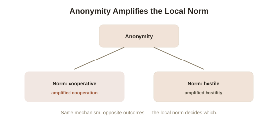

Chapter 4: Online Deindividuation and Digital Crowd Behavior
Chapter 1 mentioned, briefly, that online anonymity has been studied as a modern trigger for deindividuation, the same mechanism researchers first documented in physical crowds. This deserves a full, direct treatment, because digital spaces turn out to reveal something the original crowd research couldn't cleanly separate — and the answer is more specific and more useful than "anonymity makes people worse."
Refining deindividuation: it's not simply anonymity
Chapter 1's classic account of deindividuation, built on physical crowd and costume research, treated anonymity itself as the active ingredient — strip away individual accountability, and normally-suppressed impulses surface. Social psychologists Stephen Reicher, Russell Spears, and Tom Postmes developed a significant refinement in the 1990s called the Social Identity model of Deindividuation Effects (SIDE), built substantially on online and computer-mediated communication research, which argues that anonymity doesn't simply remove behavioral restraint in a generic, undirected way — it shifts a person's operative identity from their personal, individual self to whichever group identity is most salient in that specific context, and behavior then conforms to that group's norms specifically, whatever those norms happen to be. This is a genuinely different, more precise mechanism than simple disinhibition: anonymity doesn't unleash a generic "true self" lurking beneath civilization — it makes group norms, rather than individual identity, the dominant driver of behavior, for better or worse depending entirely on what those particular group norms are.
Why this refinement matters for reading online behavior
The SIDE model makes a specific, testable prediction that the older, simpler deindividuation account didn't: anonymity should amplify whatever norm is locally salient in a given online space, not uniformly increase hostility or antisocial behavior everywhere. This matches observed reality better than a blanket "anonymity is corrosive" story: some anonymous or pseudonymous online communities are measurably more cooperative, more polite, or more focused than their real-name equivalents, precisely because the locally salient group norm in that specific space happens to reward those behaviors — while other anonymous spaces, where hostility or transgression is the locally rewarded norm, show the aggressive, disinhibited behavior most people associate with online anonymity by default. The mechanism is the same in both cases; the outcome tracks the specific group norm made salient, not anonymity as an undifferentiated force.

Pile-ons as deindividuation and diffusion of responsibility combined
A coordinated online pile-on — many separate individuals independently piling criticism onto one target, often escalating well past what any single participant would consider proportionate on reflection — combines several mechanisms this topic has already covered into one recognizable, high-visibility pattern. SIDE's group-norm shift explains why a pile-on's tone can escalate rapidly once a hostile framing becomes the salient local norm in that specific thread or platform. Chapter 1's diffusion of responsibility explains why any single participant can feel their own individual contribution is minor and therefore low-stakes, even as the cumulative effect on the target is severe — each person sees only their own comment, not the aggregate weight of hundreds of similar ones arriving simultaneously. And Chapter 2's evaluation-potential mechanism, normally discussed in terms of effort, applies here to accountability instead: a comment blended into hundreds of similar ones carries far less individually attributable social cost than the same comment made alone, face to face, to the same target.
What actually interrupts this pattern, based on the mechanism
Because the SIDE model identifies group norm salience, not anonymity itself, as the operative lever, the most evidence-consistent interventions target the norm rather than the anonymity. Research on online moderation has found that visible, early moderator intervention establishing a different norm (rather than simply removing individual posts after the fact) can measurably shift a thread's trajectory before a hostile norm fully takes hold — directly consistent with SIDE's prediction that the salient local norm, not the underlying anonymity, is what's actually driving behavior. This gives a genuinely different, more targeted picture than the common assumption that requiring real names would fix online hostility on its own — some research finds real-name policies produce more modest reductions in hostility than expected, since a hostile norm, once established and salient within a specific community, can persist and shape behavior even among identified participants, which is exactly what SIDE's identity-shift mechanism, rather than a pure anonymity account, would predict.
Try this
Ideas for noticing or testing this in your own life.
- Compare your own behavior across two different anonymous or pseudonymous online spaces you participate in — notice whether the difference in tone tracks the local community norm rather than the anonymity itself, which is roughly constant across both.
- Next time you're tempted to add to a pile-on, notice the diffusion-of-responsibility framing in real time — "it's just one comment among many" — and consider the aggregate effect on the target rather than only your own individual contribution.
Worth pulling on?
A few loose threads from this chapter — if any of these genuinely grab you, that's a good sign of where to go next.
- Groups don't only distort behavior for the worse — under the right conditions, aggregating many independent people's input produces genuinely better answers than any individual could reach alone, a strikingly different outcome from everything covered so far in this topic. → The subject of the final chapter in this topic: the wisdom of crowds, and exactly what conditions separate it from the madness of crowds.
- The role of a locally salient, amplified norm in shaping outrage behavior connects directly to research on how moral outrage specifically spreads and escalates online. → Already in the library: Moral Psychology's final chapter covers outrage amplification from the moral-foundations side.